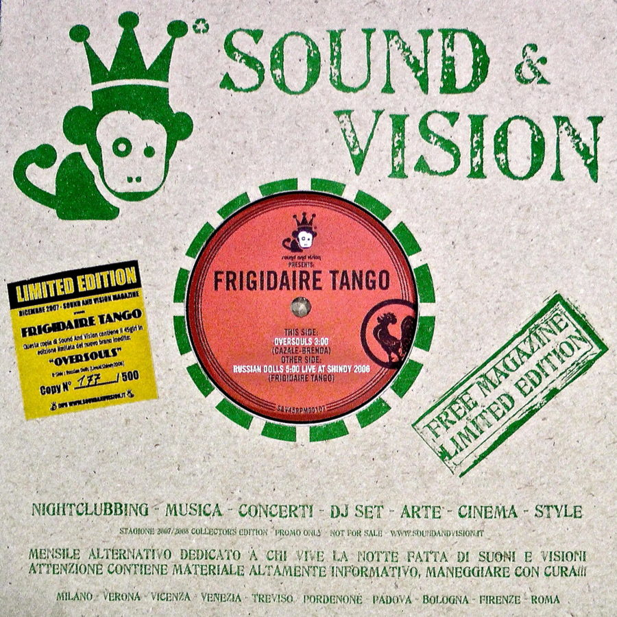

← Music

2007
Oversouls
A limited-edition single that came free with Sound & Vision magazine. Side A is "Oversouls" (Cazale–Brenda), side B a live "Russian Dolls" recorded at Shindy in 2006.
Tracklist
- 1Oversouls3:00
- 2Russian Dolls (live at Shindy 2006)5:00Deezer
Data: Deezer, Discogs, Rockit and the label pages. Durations may differ between editions.